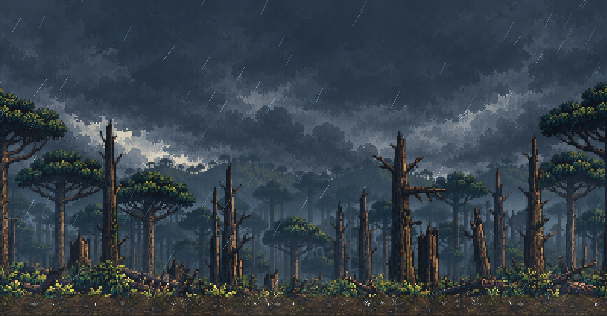
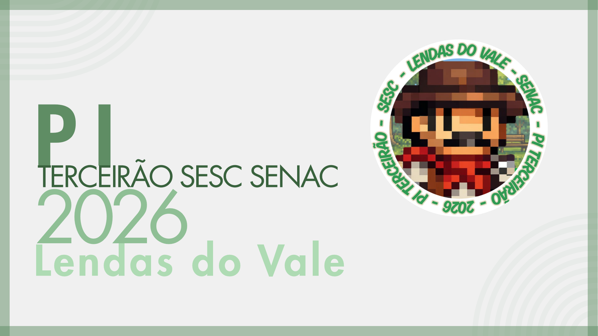

★ PROJETO INTEGRADOR 2026 ★
LENDAS DO VALE
TERCEIRÃO SESC SENAC
2026
Um jogo 2D de plataforma e aventura inspirado nas lendas, pontos turísticos, mistérios e memórias de União da Vitória (PR) e Porto União (SC).
